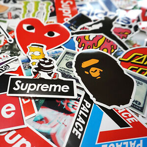

About me, Ryan, also known by my gamertag, "maxlimit"
My name is Ryan Joe, some people also know me by my Xbox gamertag, maxlimit. I am into streetwear, shoes and videogames.
My favourite streetwear brands
The top three streetwear brands I like right now are:
- Human Made
- Supreme
- Palace
Brands that I own
I own many brands including Supreme, Palace, BAPE, Human Made, Stone Island and many more! Click on the links below to view my favourite streetwear sites!:
Video games
The very first gaming console I started on was the GameBoy Advanced. I played Pokemon Ruby and Emerald! I then moved onto the Nintendo DS Lite where I played alot of Pokemon Pearl and Mario Kart. Moving away from the Nintendo consoles, I got my first Xbox 360 console with Kinect. The first games I got was Kinect Adventures, Kinect Sport, Kung Fu Panda and Dragon Ball Raging Blast 2. Moving away from these games I really got started into the Call of Duty franchise where the first Call of Duty game I picekd up was Modern Warfare 3. Call of Duty: Modern Warfare 3 was one of the best Call of Dutys as it was one of the most games I played ever and I met some amazing people on there that I still know to this date. Call of Duty: Black Ops 2 was the next Call of Duty to release and it was just as good!